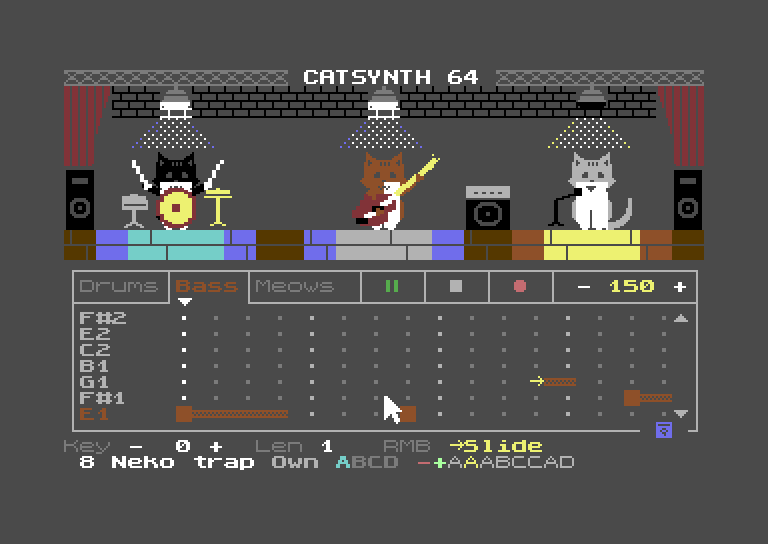
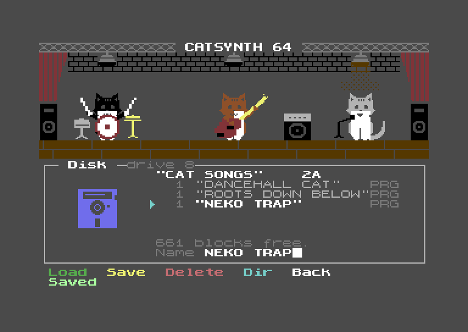
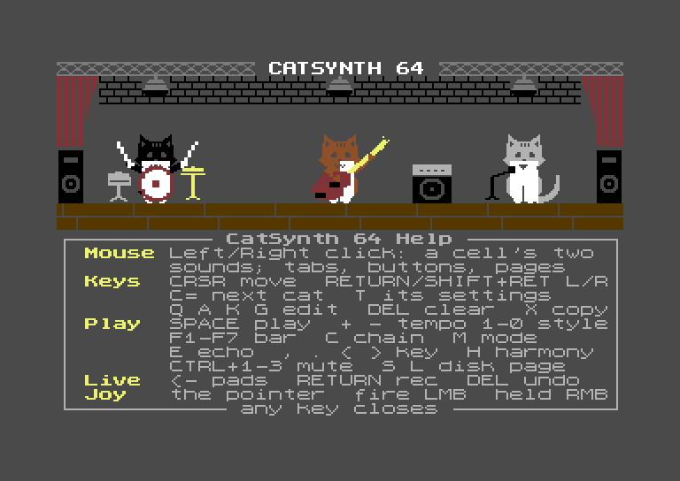

CATSYNTH 64
a groovebox for the Commodore 64 with a band of three cats
version 1.0 · illobo/netmilk 2026

What is it?
Three cats play in a band on your C64. Ringo Purr plays the drums. Paw McCatney plays the bass. Mick Jaguar sings, and since he is a cat, he sings in meows.
Choose one of ten styles and the band starts playing: dancehall, roots, steppers, ska, bossa, disco, funk, acid, a blues shuffle, and Neko Trap, a weird half-time trap with robot meows.
Then make the song yours. Click a step to add a drum, a bass note or a meow. Every meow lands on a note of the song's scale, so the singer is never out of tune. Chain bars into a song, play the pads live, record into the loop, and save your songs to disk.
The disk also has ten techno songs by the band, from acid squelch to dub techno, to load from the disk page and make your own.
You do not need to know anything about music. If you do, you will find modes, scales, transposes, swing, dub echoes and a looper.
Pictures







What it can do
| 3 cats | drums (14 sounds, two per row: the left and right mouse buttons), bass and meows |
| 10 styles | each with its own kit, bass sound, scale, tempo and a song of four bars |
| 10 slots | ten songs in memory on the keys 1-0, switched on the bar line; SHIFT+1-0 plays a song with another style's sounds |
| Mouse | a 1351 mouse in port 1 (or a USB mouse on the C64 Ultimate); a joystick moves the pointer too |
| Songs | four bars A to D, a chain of up to 16 bars |
| Settings | Bend, Vowel and Tone for each meow, Cat Size, a sidechain, the kit's tune, bass wave, Meowize, an acid squelch and a dub filter on the bass delay |
| Live | play the keyboard as pads and record into the loop |
| Second SID | dub echoes, a harmony singer and a bass delay |
| Disk | a directory, names, load, save and delete |
| 10 songs | ten techno songs on the disk to load and remix: Acid Alleycat, Berlin Basement, Detroit Whiskers, Dub Techno Nap, Hard Purr, Laser Pointer, Minimal Mouser, Rave of 9 Lives, Techno Tabby, Warehouse Kitty |
Start here
The tutorial makes your first song in ten minutes. The manual tells you everything else.
Play it here
Best with a keyboard and a mouse. Click the screen and move the mouse: the cat paw pointer follows it. SPACE plays and stops, 1 to 0 choose a style.
Get it
It runs on a real Commodore 64 (PAL), on a C64 Ultimate or an Ultimate 64, and in the VICE emulator.
Or the program file: catsynth64.prg, or everything with the manual:
catsynth64-1.0.zip.
On a disk, type LOAD"CATSYNTH64",8,1 and then RUN.
The code: github.com/illobo/catsynth64